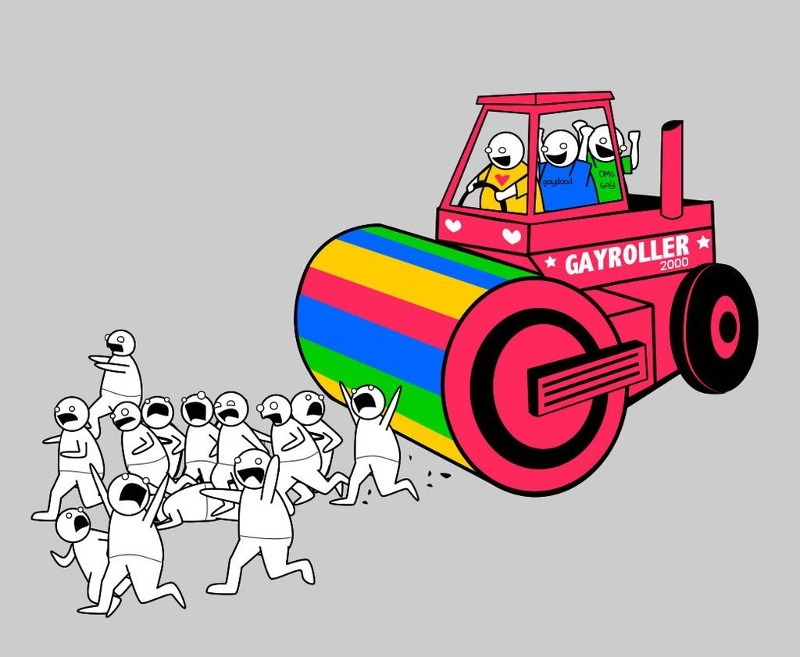

Some guy: writes ridiculous racist novel with bizzaro world fantasy land racial assumptions:
Trump alt-right types: stan it endlessly because it’s “prophetic” (it really, really isn’t, except maybe as a ludicrous exaggeration)
Fascist-mockers: make fun of the racist author for looking like a perfectly normal older white man
Stuff like this is destructive.
WRT immigration: we’ve been trying to get people to recognize that something is wrong, that they can be hurt, that just because you are a meek and mild neoliberal doesn’t mean that everybody else is.
It’s like trying to teach somebody who grew up in a land where cars are rare and drivers are insanely careful that there is a very real hazard.
And then, this guy teaches them this kind of ludicrous, lurid tall tale where VW Bugs become Panzers and Americans with their big dually pickups and presumption turn into homicidal maniacs driving monster trucks.
Also, the Gayroller from The Oatmeal is supposedly not just real, but common.

And the everyday anarchy that exist on the streets of third world countries is presented not as commonplace chaos, but as The Purge.
To a thinking person, this is all clearly lurid BS that brands the author either as an unhinged racist or a writer of exploitation media. And yet, someone may easily be distracted from the fact that cars are a lot more common outside your Ruritania, that drivers from other lands presume upon their right of way, and that not everyone is cautious.
WRT immigration: we’ve been trying to get people to recognize that
something is wrong, that they can be hurt, that just because you are a
meek and mild neoliberal doesn’t mean that everybody else is.
I confess that I’m having trouble parsing the non-metaphorical version of the point here. Care to elucidate?